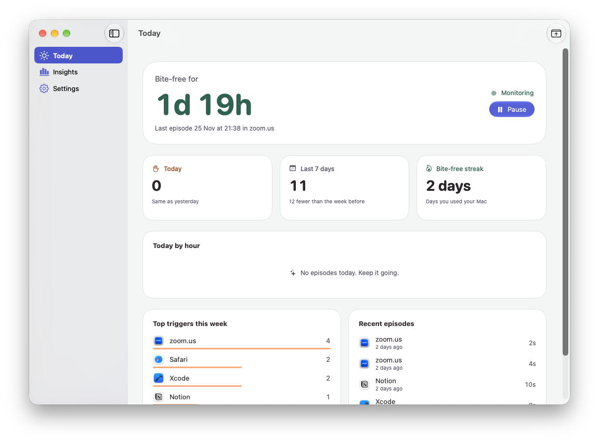
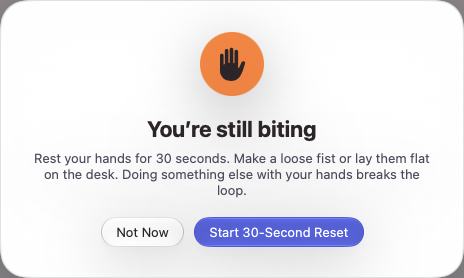
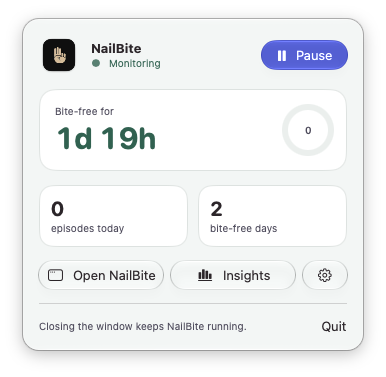

NailBite watches through your Mac’s camera, entirely on-device, and nudges you the moment your hand
goes to your mouth. Then it shows you when and where it happens, so you can change the pattern.
Free and open source · macOS 15.6 or later · Apple silicon and Intel

Hands downNail-biting detected in Zoom
Three steps, from habit to awareness
1 · Notice
A tap on the shoulder, not an alarm.
When your hand reaches your mouth, a small banner slides in under the menu bar and names the app
you’re in. It doesn’t steal focus or switch Spaces, so you can keep typing. One banner per episode,
not one every few seconds.
Hands downNail-biting detected in Xcode
2 · Reset
Still going? Take 30 seconds.
If biting continues, NailBite offers a short reset: hands down, breathe in for four seconds, out for
four. Doing something else with your hands is the core of habit reversal training, a standard
behavioral therapy for nail biting. You can turn the reset off in Settings.

Breathe inBreathe out
3 · Understand
See when and where it happens.
Insights groups detections into episodes and maps them by weekday and hour, so the meeting slot or
the late-night coding session that sets you off stands out. Bite-free days and streaks count only
the days you actually used your Mac.
Always there
Lives in your menu bar.
Close the window and NailBite keeps watching. The menu bar panel shows your bite-free time, today’s
count, and your streak, with one click to pause or open Insights.

Your camera never leaves your Mac.
Processed in memory
Each frame goes straight to a Core ML model on your Mac and is discarded. Nothing is recorded or saved.
No network at all
The app runs in Apple’s App Sandbox without network access, so it couldn’t upload anything if it tried.
Your data, your call
Stats stay in the app’s own folder on your Mac. Delete them any time from Settings.
Open source
Every line of the app and the models are on GitHub for you to check.
macOS may say the app is from an unidentified developer. Go to System Settings → Privacy & Security and
choose Open Anyway. If the menu bar icon is hidden, drag it out from Control Center.